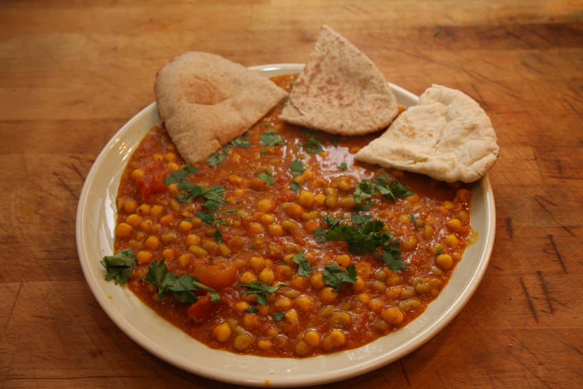

Home
Dal Palak

Description
Those who say that vegetarian dishes are bland clearly has never tried these aromatic lentils and spinach in a creamy coconut sauce!
A slightly spicy and buttery naan is the perfect companion for this dish, too!
Ingredients
- Canned lentils
- Fresh baby spinach
- Coconut milk
- Curry mix
- Chilly flakes
- Cumin
- Butter
- Store bought naan
Steps
- Preheat the oven at 200 degrees Celsius
- Finely chop the baby spinach
- Put some oil in a pan and pan fry the spinach until their volume becomes manageable
Note:
It will look like it's a lot of spinach at the beginning but, I promise, it will reduce a lot very quickly.
- Rinse the lentils and add them to the pan
- Add the coconut milk and the spice mix
Tip!
You can use a store-bought curry mix but I recommend also adding a bunch of spices, i.e. cumin, tumeric, paprika, pepper, and even some powdered coriander if you like it!
- Let it simmer for a bit, until the coconut milk is no longer watery
- Meanwhile, melt a little bit of butter and add some cumin and chilly flakes to it, mix well
- Coat both sides of the naan with the spicy butter and put it in the oven to golden. Flip it and golden the other side
- Serve the lentils and spinach in a bowl with the bread on the side
Enjoy!